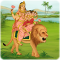

-
 देवीची दहा रुपंसर्वांची माता आणि असूरांचा विनाश करणारी, आकर्षक, तेजस्वी दहा हातांची सशस्त्र देवी.तिच्या आगमनाने शांती आणि आनंद मिळतो. दुर्गेची देवी म्हणून उपासना केली जाते, तर रागाचे मुर्त स्वरुप आणि आदराने आई म्हटलं जातं. महिषासुराचा पराभव करण्यासाठी ब्रम्हा, विष्णू आणि महेश्वर यांच्या शक्तीचे मिश्रण होऊन दुर्गा देवीची निर्मिती झाली होती.
देवीची दहा रुपंसर्वांची माता आणि असूरांचा विनाश करणारी, आकर्षक, तेजस्वी दहा हातांची सशस्त्र देवी.तिच्या आगमनाने शांती आणि आनंद मिळतो. दुर्गेची देवी म्हणून उपासना केली जाते, तर रागाचे मुर्त स्वरुप आणि आदराने आई म्हटलं जातं. महिषासुराचा पराभव करण्यासाठी ब्रम्हा, विष्णू आणि महेश्वर यांच्या शक्तीचे मिश्रण होऊन दुर्गा देवीची निर्मिती झाली होती. -
सिद्धिदात्रीनवरात्रीच्या नवव्या दिवशी सिद्धिदात्री देवीची उपासना होते. यारूपात भक्तांच्या इच्छा, गरजा पूर्ण करण्यासाठी प्रसिध्द आहे.
-
कुष्मांडाचौथ्या दिवशी दुर्गेच्या प्रकटीकरणाला कुष्मांडा म्हणतात. दुर्गेच्या स्मितामुळे जगातील काळोख दूर झाला आहे म्हणून देवीच्या प्रत्येक मूर्तीवर स्मित आहे.
-
ब्रह्मचारिणीदुर्गाचे हे `भव्य` रूप. मूर्तीच्या उजव्या हातात एक कमंडल असून डाव्या हाती जपमाळ आहे. नवरात्रीत दुसऱ्या दिवशी या रूपाची उपासना करण्यात येते.
-
शैलपुत्रीशैल म्हणजे पर्वत. देवीच्या नऊ विविध रूपांपैकी मातृत्त्व भावनेचं रूप. कपाळावर अर्ध चंद्र,उजव्या हाती त्रिशुल,तर कमळाचे फुल डाव्या हातात आणि गायीवर विराजमान अशा रूपातील या देवीच नवरात्रीत पूजन होत.
-
महागौरीबुद्धिमान आणि शांत असा हा दुर्गेचे रूप
-
चंद्रघंटानवरात्रीत तिसऱ्या दिवशी दुर्गेच्या चंद्रघंटा रूपाची उपासना होते. तिच्या डोक्यावर चंद्रकोर आहे.चंद्रघंटा देवीला न्याय आणि धर्माची स्थापना करण्यास जबाबदार आहे असं मानलं जातं.
-

स्कंदमाताचार हात आणि तीन डोळयांच्या देवीच्या यारूपाचे पूजन पाचव्या दिवशी होतं.
-
कात्यांयनीनवरात्रीच्या सहाव्या दिवशी कात्याूयनीचं पूजन होत. कात्या कुळामध्ये जन्मामुळे तिचे नाव कात्यायनी झाले. प्रेम आणि राग यांचे मिश्रण मूर्तीत दिसतात.
-
कालरात्रिदुर्गेचे सर्वात हिंसक रूप म्हणून प्राचीन हिंदू साहित्यात प्रसिद्ध, कालरात्रिची सातव्या दिवशी उपासना होते. देवीचे हे रूप भक्तांच्या मनातमध्ये भीती निर्माण करणार आहे. सर्व आसुरी शक्तीचा नाश करणारी ही देवी आहे.